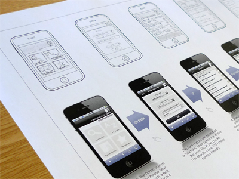
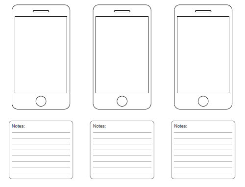

Storyboarding, wireframing... Hablamos de comunicación
Cada vez que hablamos de Storyboarding, wireframing, sketching, brainstorming... Nos encontramos involucrados en una pequeña discusión en la cual cada uno apoya o considera una perdida de tiempo la inversión de realizar esquemas previos a un diseño o desarrollo final.
El problema es que la conversación se enfoca desde un punto de vista erróneo. Estas palabras son herramientas de comunicación. Hay que utilizarlas en la justa medida y necesidad del proyecto.
Palabras
Empecemos definiendo. Me referiré al ámbito de la web o de aplicaciones, pero son aplicables a todos los ámbitos de desarrollo.
Brainstorming: Principalmente son reuniones entre los distintos implicados en el desarrollo de una web o aplicación (clientes, desarrolladores, directivos...) en el que se exponen todas las ideas sobre el proyecto para ser estudiadas, sacar conclusiones y marcar objetivos. También puede ser un simple tablón en el que cada uno pega un post-it con su idea. Es conveniente que siempre este presente a lo largo del proyecto.
Storyboarding: Es una de las más interesantes y a la vez menos utilizada. El storyboarding ayuda a comprender la situación y el marco de desarrollo real de la aplicación a través de una historia. Se diseñan distintas viñetas en las que los usuarios finales interaccionan con la aplicación en varias situaciones. Importante para el desarrollo de aplicaciones tanto web, como móviles. Nos permite conocer el entorno de su uso.
Wireframing: Consiste en el diseño de una plantilla básica de los elementos que contendrá la interfaz, así como su posicionamiento y algunas características como altura, anchura, fuentes y tamaños de letra... Se debe de utilizar para niveles bajos de precisión en el diseño, primeras pinceladas e impresiones. Se debe de tener rápido para ir mejorándolo lo antes posible.

Wireframe + storyboarding (Shot de Paul Stanton)
- Sketching: En este caso se diseña una plantilla con más nivel de detalle. Ya hablamos de colores y elementos concretos. El nivel de detalle puede ir desde un dibujo a un diseño completo en Photoshop u otras herramientas. Para una fase más avanzada cuando ya tenemos las primeras versiones del desarrollo.
¡Cuenta, cuenta!
Cada herramienta de este tipo conlleva un tiempo de desarrollo. Nadie realiza un storyboarding sin antes plantear la aplicación y el propio dibujo de este consume tiempo. Por supuesto, obtenemos mucho en positivo de este tipo de esquemas.
Estos nos ayudan a comprender el entorno de uso de nuestra aplicación. Comprender la situación del usuario: si necesitará rapidez en su uso, o necesitará involucrarse para evadirse durante unos minutos de su trabajo. Todo influye de manera radical en el diseño de la experiencia de usuario de un proyecto.
Por ejemplo, en un proyecto en el que trabajo, tenemos que desarrollar una aplicación para un gimnasio. La aplicación consiste en una guía de ejercicios para sus clientes así como un análisis de sus avances.
Gracias a un pequeño storyboarding que dibujo un compañero, nos dimos cuenta de que las personas que utilizaran la aplicación tendrán poco tiempo para utilizarla (entre ejercicio y ejercicio). Además nos encontramos con un segundo problema, el hecho de que la indumentaria de deporte no suele tener bolsillos. Con una hora de dibujo y media hora de brainstorming sacamos esta y muchas conclusiones más.
Ahora bien, si yo trabajo con un compañero en el desarrollo de una tienda online, ¿de qué me sirve un storyboarding?, de nada. Es como si para cocinar, tratáramos de utilizar absolutamente todo lo que tenemos en la nevera. No tiene lógica hacer eso, pues para un proyecto igual, cada uno tiene su propia receta.
Obligarnos a añadir todas las herramientas a un proyecto es como si para cocinar, tratáramos de utilizar absolutamente todo lo que tenemos en la nevera. No tiene lógica hacer eso, pues para un proyecto igual, cada uno tiene su propia receta.
¡Enseñamelo!
Aquí nos encontramos con la eterna discusión entre un wireframe y un sketch. El cliente ama el sketch completo y en mi caso, amo el wireframe y después el sketch básico.
Es normal que un cliente no quiera ver un esquema de diseño, esto es algo para nosotros y para comunicarnos con nuestro equipo. Pero tampoco es necesario enseñarle como va a quedar exactamente su web en una foto, pues nadie puede cumplir eso (el idolatrado .psd que traslada al cliente a un futuro donde verá su web). Partiendo de la cantidad de navegadores web que existen, ya es imposible.
Photoshop es una buena herramienta, pero no la única y os sorprenderá el agrado con el que recogen los clientes y video explicativo, lo digo por experiencia.
En la mayoría de los casos, el segundo método de wireframe y sketck básico conlleva menos tiempo que un diseño completo en photoshop, y a la vez enriquece más el punto de vista del cliente. Tenemos muchos recursos a nuestra disposición, echad un vistazo al siguiente artículo: Free Printable Sketching, Wireframing and Note-Taking PDF Templates.

Plantilla wireframe para móvil (Interactive Logic)
Mi método es ese. Una vez tengo esto, anoto todas las ideas que se me han ocurrido en un papel, cojo mi sketch y a través de skype o en persona, comento al equipo que utilizará mi aplicación por qué se ha diseñado cada color y cada letra.
No hablamos solo de diseño, hablamos de comunicación
Como vemos,* cada herramienta de este tipo sirve para comunicarnos, tanto de manera interna (con nuestros compañeros) como de manera externa (con el cliente). Nunca debemos de perder esa noción, son herramientas para ayudarnos y por lo tanto debemos utilizarlas cuando el proyecto lo requiera*.
También comento que nunca debemos de perder la relación cliente-desarrollador. Somos diferentes, pero debemos de involucrarnos. Si no tenemos el apoyo de los clientes, y cuando digo clientes me refiero a los departamentos, directivos... nuestra aplicación fracasará.